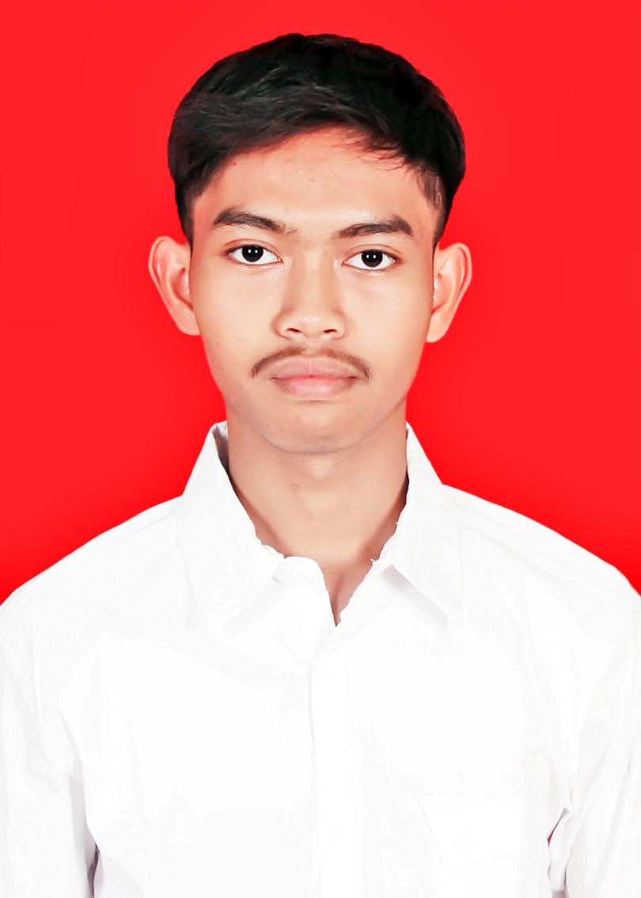

Saya adalah mahasiswa S1 Teknik Elektro Telkom University yang memiliki minat pada bidang elektronika, robotika, dan sistem berbasis mikrokontroler.
Selain di bidang teknik, saya juga aktif sebagai live streamer dan afiliator di TikTok & Shopee, serta bekerja sebagai driver ShopeeFood secara part-time.
Saya juga sering membantu mahasiswa dalam tugas dan project teknik, sehingga terbiasa menjelaskan materi, menyelesaikan masalah, dan bekerja secara mandiri maupun dalam tim.
Elektronika & Rangkaian
Robotika dan IoT
Service Laptop & HP
Python Basic
Excel / Spreadsheet
Public Speaking
Live Streaming
Affiliate Marketing
Kurir Shopee (Freelance)
Robot berbasis ESP32
Object Detection dengan YOLO
Sistem Monitoring IoT
Perbaikan perangkat elektronik
Konten Live Streaming & Affiliate
Live Streamer TikTok
Affiliate Shopee & TikTok
Driver ShopeeFood (Part-time)
Freelance Tutor & Project Assistant
Saya ingin mengembangkan kemampuan di bidang teknik elektro, robotika, dan teknologi digital, serta menggabungkannya dengan dunia kreatif dan industri modern.